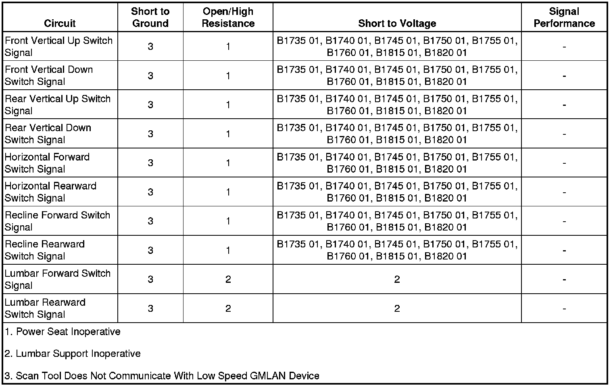

B1815
DTC B1735, B1740, B1745, B1750, B1755, B1760, B1815, or B1820
Diagnostic Instructions
* Perform the Diagnostic System Check - Vehicle (Initial Inspection and Diagnostic Overview) prior to using this diagnostic procedure.
* Review Strategy Based Diagnosis (Initial Inspection and Diagnostic Overview) for an overview of the diagnostic approach.
* Diagnostic Procedure Instructions (Initial Inspection and Diagnostic Overview)provides an overview of each diagnostic category.
DTC Descriptors
DTC B1735 01
- Seat Front Up Switch Circuit Short to Battery
DTC B1740 01
- Seat Front Down Switch Circuit Short to Battery
DTC B1745 01
- Seat Rear Up Switch Circuit Short to Battery
DTC B1750 01
- Seat Rear Down Switch Circuit Short to Battery
DTC B1755 01
- Seat Assembly Forward Switch Circuit Short to Battery
DTC B1760 01
- Seat Assembly Rearward Switch Circuit Short to Battery
DTC B1815 01
- Seat Recline Forward Switch Circuit Short to Battery
DTC B1820 01
- Seat Recline Rearward Switch Circuit Short to Battery
Diagnostic Fault Information

Circuit/System Description
When the power seat switches are pressed, they send a 12-volt signal through the switch signal circuits to the memory seat module (MSM). The MSM then commands the driver seat and lumbar motors to move in response to the switch signals.
Conditions for Running the DTC
The MSM must be powered.
Conditions for Setting the DTC
* If a seat switch circuit is active in one direction and the switch for the opposite direction is pressed, this DTC will set.
* A short to voltage on a switch signal circuit.
Action Taken When the DTC Sets
* A motor output driven in response to a switch considered failed, is deactivated for both directions.
* All memory recall commands are ignored.
* The MSM will respond to any other switch signal that has not set a DTC.
Conditions for Clearing the DTC
* The current DTC will clear and set the code to history, 3 seconds after the fault is no longer present and the ignition is cycled OFF then back to ACC or RUN.
* The history DTC will clear after 50 consecutive fault-free ignition cycles have occurred.
Diagnostic Aids
If one of the switch signal circuits is shorted to battery, multiple codes will set.
Reference Information
Schematic Reference
Driver Seat Schematics (Driver Seat Schematics)
Connector End View Reference
Component Connector End Views (Connector Views)
Description and Operation
Power Seats System Description and Operation (Folding Seat) (Power Seats System Description and Operation (Folding Seat))Power Seats System Description and Operation (Front Seat) (Power Seats System Description and Operation (Front Seat))
Electrical Information Reference
* Circuit Testing (Component Tests and General Diagnostics)
* Connector Repairs (Component Tests and General Diagnostics)
* Testing for Intermittent Conditions and Poor Connections (Component Tests and General Diagnostics)
* Wiring Repairs (Component Tests and General Diagnostics)
Scan Tool Reference
Control Module References (Programming and Relearning)
Circuit/System Verification
Ignition ON, observe the scan tool seat switch parameters while pressing the related seat adjuster switches. The reading should change between INACTIVE and ACTIVE.
Circuit/System Testing
1. Ignition OFF, disconnect the harness connector at the seat adjuster switch.
2. Verify the scan tool seat switch parameters listed below are Inactive.
* Front Vertical Upward Switch
* Front Vertical Downward Switch
* Rear Vertical Upward Switch
* Rear Vertical Downward Switch
* Horizontal Forward Switch
* Horizontal Rearward Switch
* Recline Forward Switch
* Recline Rearward Switch
• If not INACTIVE, test the appropriate signal circuit for a short to voltage. If the circuit tests normal, replace the MSM.
3. If all circuits test normal, test or replace the seat adjuster switch.
Component Testing
Seat Adjuster Switch
1. Ignition OFF, disconnect the harness connector at the seat adjuster switch.
2. Test for infinite resistance between each signal terminal (A, B, D, E, and J-M) and the B+ terminal F with the switch in the open position.
• If less than the specified value, replace the seat adjuster switch.
3. Test for less than 1 ohm of resistance between each signal terminal (A, B, D, E, and J-M) and the B+ terminal F with the switch in the closed position.
• If greater than the specified range, replace the seat adjuster switch.
Repair Instructions
Perform the Diagnostic Repair Verification (Verification Tests) after completing the diagnostic procedure.
* Power Seat Switch Replacement (Power Seat Switch Replacement)
* Control Module References (Programming and Relearning)for MSM replacement, setup, and programming